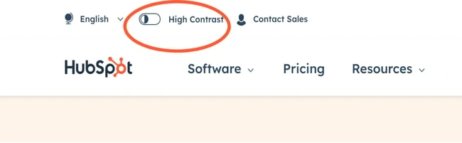
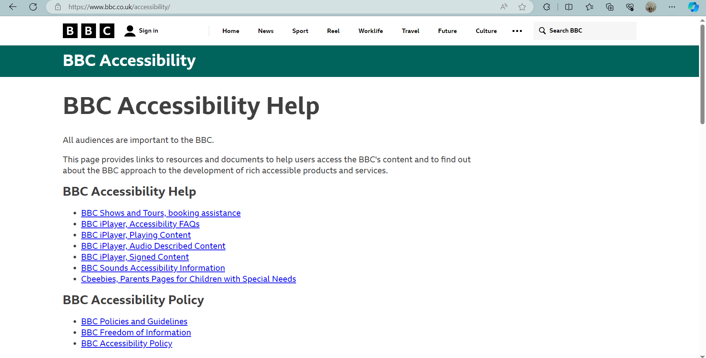
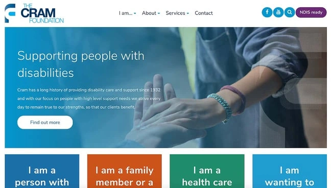
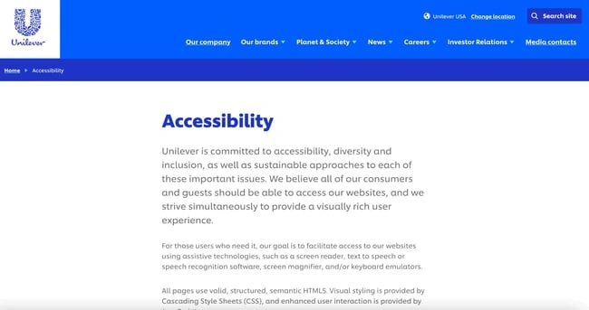

Created by Natalia Ivantsova. Source code published on GitHub.
(often abbreviated to A11y — as in, "a", then 11 characters, and then "y")
in web development means enabling as many people as possible to use websites, even when those people's abilities are limited in some way.
Offer text alternatives.
img src="decorative.png" alt=""
Make your content easy to see and hear 
Use Semantic HTML
Ensure complete functionality via the keyboard
Avoid blinking/flashing content
Provide navigation to help users know where they are and where they can go
BBC
The Cram Foundation
Unilever
